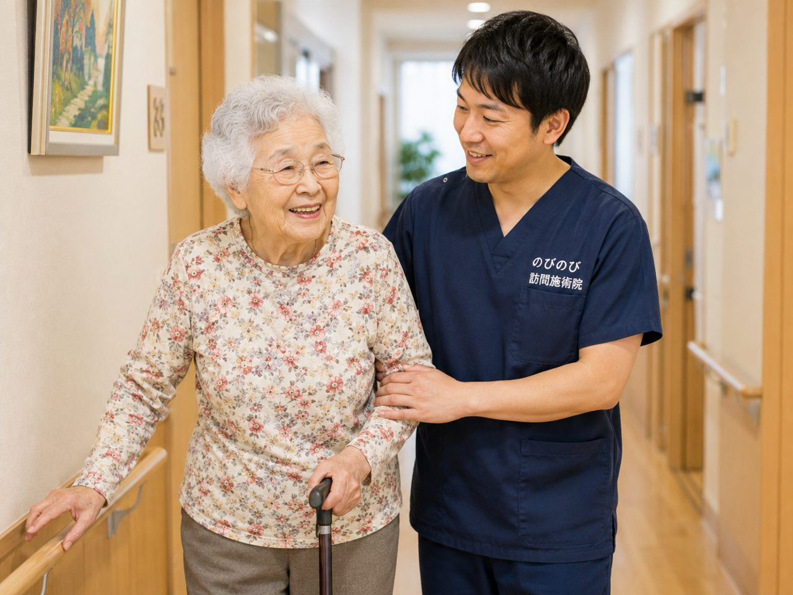

伊丹市で暮らすご高齢のご家族が、膝や腰の痛み、しびれで通院に苦労している。近くに住むご家族も、毎回の付き添いまでは難しい。そんなときの選択肢が、自宅まで伺う訪問鍼灸マッサージです。のびのび訪問施術院は、鍼やお灸を軸に、こわばりをゆるめる手技も加えて、長引く痛みやしびれに向き合います。医師の同意書があれば医療保険が使え、1割負担なら1回およそ395円。通院のつらさから離れて、住み慣れた家でケアを続けられます。
この記事のポイント
伊丹市の訪問鍼灸マッサージは、通院が難しくなった方の自宅や施設へ国家資格者が伺い、医師の同意にもとづく医療保険で受けられます。医師が必要と認めた慢性的な痛みやしびれ、麻痺にともなうこわばりが対象で、1回の施術は総額3,950円。要介護認定がなくても医師の同意があれば利用でき、介護保険の支給限度額とは別枠です。エリア内は交通費の上乗せがなく同額。JR・阪急の伊丹駅周辺から昆陽・荒牧・鴻池・北伊丹・稲野まで、市内全域に伺います。
伊丹市のどのあたりまで伺えるのか
JR伊丹駅や北伊丹駅のまわり、阪急伊丹・新伊丹・稲野の各駅から歩くような住宅地はもちろん、昆陽や荒牧、鴻池、南野、瑞ケ丘といった少し駅から離れた地域まで、日々自転車や車でお伺いしています。道が細い場所や集合住宅にお住まいでも、伺えないと決めてしまう前に一度ご相談ください。伊丹市内であれば遠い近いにかかわらず料金は一律で、別途の出張費はいただきません。
「うちは市の端のほうだけど来てもらえるの」というお問い合わせをよくいただきます。市境に近い一部の地域についても対応できることがありますので、詳しくは「対応エリアはどこまで来てもらえる？」もあわせてご覧ください。
伊丹市で「訪問マッサージ」を探している方へ
伊丹市で在宅の施術をお探しの方は、「伊丹 訪問マッサージ」という言葉で調べておられることが多いと思います。ただ、この言い方でまとめられている施術には、はり・きゅうの療養費と、あん摩マッサージ指圧の療養費という別々の枠組みがあります。それぞれ対象になる状態がちがい、どちらも医師の同意など所定の要件が必要です。
のびのび訪問施術院は、はり・きゅうを施術のベースにしていて、保険はすべて鍼灸で算定します。その日の体の状態を確認しながら鍼やお灸を行い、必要に応じて手技やストレッチ、無理のない範囲で身体を動かす運動なども組み合わせます。どちらにあたるかは体の状態と医師の判断によりますので、まずは確認だけでも構いません。ちがいは「訪問マッサージと訪問鍼灸の違い」でご説明しています。伊丹市内は伊丹駅周辺から荒牧、瑞ケ丘、昆陽、南野のあたりまで伺います。
伊丹で多いご相談と、鍼灸でできること
荒牧や鴻池のあたりでお声がけいただくと、膝の痛みや腰の重さ、肩が上がりにくい、足がしびれて長く歩けない、といったお悩みが多い印象です。医療保険のはり・きゅうの対象になるのは、神経痛・リウマチ・頸肩腕症候群・五十肩・腰痛症・頸椎捻挫後遺症という6つの疾病です。むち打ちの後に残った首や肩のつらさ、加齢とともに増える腰や膝の痛みは、この範囲に含まれることがよくあります。
なかでも坐骨神経痛は、お尻から太もも、ふくらはぎへと続く痛みやしびれで、じっとしていてもつらいと訴えられる方が目立ちます。鍼灸は病気そのものを治すものではありませんが、こわばった筋肉をゆるめ、日々を少し楽に過ごしていただく手助けにはなります。詳しくは伊丹市で坐骨神経痛にお悩みの方へのページにまとめていますので、思い当たる方はご覧ください。
料金は1回およそ395円から
施術1回の総額は3,950円で、そのうち医療保険が使えるため、実際にお支払いいただくのは自己負担分だけです。1割の方で約395円が目安になります。たとえば週2回のペースで1割負担の方なら、ひと月あたりおよそ3,160円。無理なく続けられる金額をめざしています。
仕組みや負担額のことをもう少し知りたい方は、「料金はいくら？医療保険の自己負担額と仕組み」で具体的にご説明しています。
要介護認定がなくても、医師の同意書で受けられます
訪問の鍼灸マッサージは、医療保険（療養費）と医師の同意書があれば受けられます。要介護認定は必要ありません。すでに介護保険でデイサービスやヘルパーを利用されている方でも、鍼灸マッサージは介護保険の支給限度額とは別の枠組みですので、限度額とは別に併用していただけます。
同意書は、かかりつけの先生にお願いすれば書いていただけるものです。稲野や南野のあたりで「どう頼めばいいのか分からない」という方には、当院から段取りをご案内しますので、どうぞお気軽にお声がけください。
あわせて行うこと、気をつけていただきたいこと
はり・きゅうを軸にしながら、こわばった筋肉をゆるめる手技や、動く範囲を保つための機能訓練も、一緒に行います。これらに追加の料金はかかりません。ベッドから起き上がる、トイレまで歩く、そうした毎日の動作を少しでも保てるように、体の状態を見ながら組み立てていきます。
ひとつだけご注意いただきたいのは、同じ部位について、医療保険のリハビリと鍼灸を同じ月に同時に算定することはできない点です。通院やデイでリハビリを受けている部位がある場合は、事前にお知らせください。なお、効き方には個人差があり、同じ施術でも感じ方は人それぞれです。焦らず、その方のペースに合わせて続けていくことを大切にしています。
よくある質問
伊丹市はどこまで来てもらえますか？
伊丹市内は全域で対応しています。JR・阪急の伊丹駅周辺から昆陽・荒牧・鴻池・北伊丹・稲野の方面、市境まで承っていますので、まずはお住まいを教えてください。伊丹市内であれば対応できるかを具体的にお答えします。
伊丹市で保険を使うには何が必要ですか？
医師の同意書が必要です。伊丹市のかかりつけの先生にお願いでき、書類の段取りは当院が整えます。医師が鍼やお灸での治療が必要と認めた慢性的な痛みやしびれ、麻痺にともなうこわばりが対象です。
要介護認定を受けていなくても利用できますか？
利用できます。訪問鍼灸マッサージは医療保険のケアで、介護保険の要介護認定とは別のしくみです。認定がなくても、医師の同意書があれば受けられますので、まずは今の状態をお聞かせください。
膝の痛みや坐骨神経痛でも受けられますか？
膝の痛み、坐骨神経痛などの神経痛、腰痛、しびれといった慢性的な不調は目安になります。医師が施術の必要を認め、通院がむずかしければ対象になる場合があります。まず主治医にもご相談ください。
伊丹市では症状別のページもあります。伊丹市で坐骨神経痛にお悩みの方へ、伊丹市で五十肩・肩の痛みにお悩みの方へ、伊丹市で膝の痛みにお悩みの方へ。
伊丹市内で交通費はかかりますか？
伺える範囲のご自宅であれば、表示の料金のほかに別途の出張費（出張料・交通費）はいただきません。伊丹市内はどこでも同額です。
介護保険のサービスと一緒に使えますか？
使えます。医療保険のしくみなので、デイサービスやヘルパーなど介護保険の支給限度額とは別枠で併用できます。担当のケアマネジャーとも連携しながら進めます。
施設に入っていても来てもらえますか？
伺えます。伊丹市内の有料老人ホームやサービス付き高齢者向け住宅にお住まいの方のところにも訪問しています。施設のご都合に合わせて曜日と時間を決めます。
支払いはどのようになりますか？
お支払いは月ごとにまとめてお願いしています。内訳はあとからでも確認できます。1回の施術は総額3,950円で、1割の方の負担はおよそ395円が目安です。
土日に来てもらえますか？
土曜・日曜・祝日はお休みをいただいています。うかがえるのは平日の9時から18時までです。ご家族が立ち会えない日に、ご本人おひとりで受けておられる方も多くいらっしゃいます。初回だけ立ち会っていただけると、目標やご希望をうかがいやすくなります。